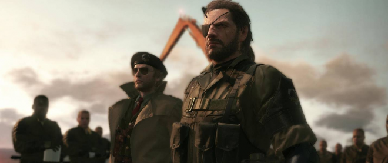

Чтобы справиться с испытаниями в стелс-экшенах, потребуются хитрость и точность. Хотя бой и другие действия также могут помочь в достижении цели, как в Dishonored, обычно в стелс-играх приветствуется скрытность. Родоначальницей этого жанра стала серия Metal Gear.